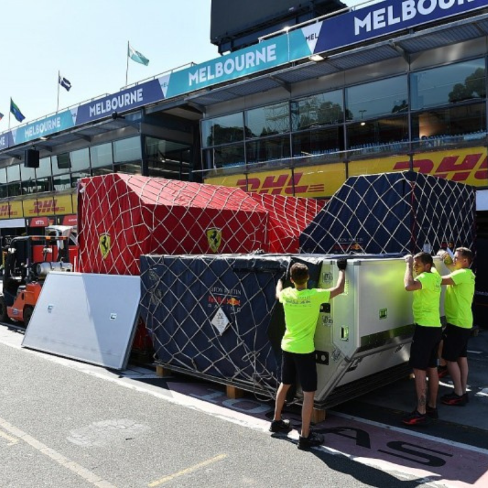
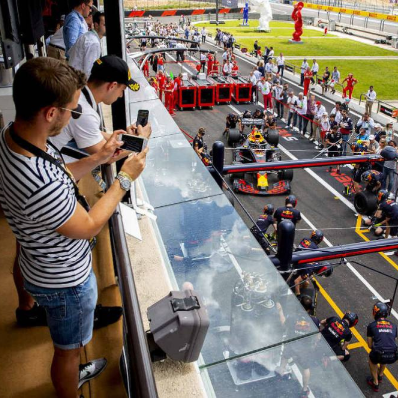

La logística en la Fórmula 1 es uno de los aspectos más complejos y fundamentales del deporte. Implica la gestión y el transporte de equipos, vehículos y suministros a los diferentes circuitos alrededor del mundo, garantizando que todo esté listo para cada carrera sin contratiempos. Cada equipo debe mover una gran cantidad de material, desde el coche de carreras hasta los repuestos, herramientas y equipos técnicos necesarios para asegurar un rendimiento óptimo. El transporte de los coches es uno de los aspectos más críticos. Los coches deben ser cuidadosamente desmontados, transportados y montados nuevamente en el circuito antes de cada carrera. Esto puede implicar transporte aéreo y terrestre, dependiendo de la ubicación de la competencia. Los equipos utilizan camiones especiales, conocidos como “motorhomes” o “caravanas”, para transportar todos los elementos de soporte, desde herramientas hasta ropa del equipo.
Además del coche, se transportan las piezas de repuesto y materiales de seguridad, como los cascos de los pilotos, trajes de fuego, neumáticos, y sistemas electrónicos que deben ser revisados y ajustados según las condiciones del circuito. El trabajo de los equipos logísticos no termina con el traslado de materiales; también deben asegurarse de que los suministros, como combustible, aceites y componentes electrónicos, estén disponibles en el lugar adecuado en todo momento. Otro aspecto clave de la logística es la coordinación de las necesidades del equipo, desde la comida y el alojamiento hasta la disposición de la infraestructura para los ingenieros y mecánicos. La logística también debe gestionar los tiempos de entrega y asegurarse de que el equipo llegue a tiempo para los entrenamientos, calificación y carrera.
Los hospitality en la Fórmula 1 se refieren a las áreas y servicios dedicados a ofrecer comodidad y experiencias exclusivas a patrocinadores, invitados y medios. Estas zonas suelen incluir lounge VIP, restaurantes de lujo, y espacios de relax dentro del circuito. Los equipos y patrocinadores utilizan estos servicios para fortalecer relaciones comerciales y proporcionar una experiencia única a sus clientes y empleados. Además, los hospitality suites ofrecen vistas privilegiadas de la pista, brindando una experiencia de lujo mientras disfrutan de la emoción de las carreras, con un enfoque en el confort y la exclusividad.